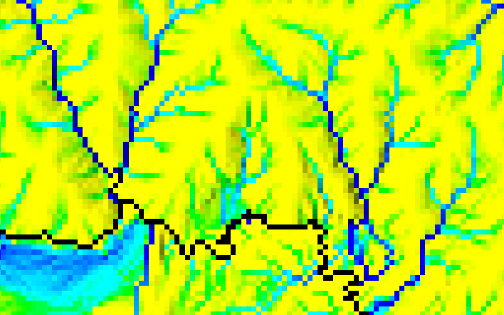
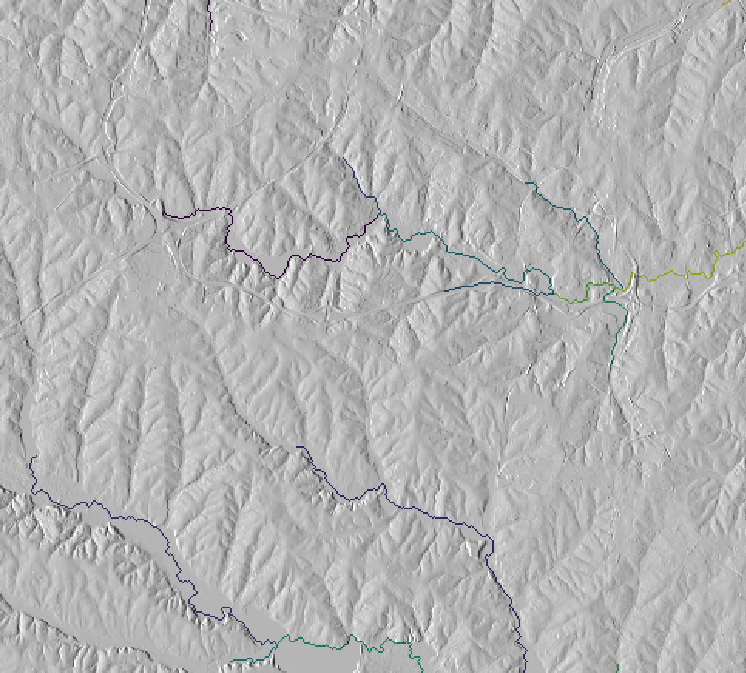

Weight map (spatial subset with lake in the southern half)
NULL (nodata) cells in the input elevation map are ignored, zero and negative values are valid elevation data. Gaps in the elevation map that are located within the area of interest must be filled beforehand, e.g. with r.fillnulls, to avoid distortions.
All non-NULL and non-zero cells of depression map will be regarded as real depressions. Streams will not be routed out of depressions. If an area is marked as depression but the elevation model has no depression at this location, streams will not stop there. If a flow accumulation map and a map with real depressions are provided, the flow accumulation map must match the depression map such that flow is not distributed out of the indicated depressions. It is recommended to use internally computed flow accumulation if a depression map is provided.
Option threshold defines the minimum (optionally modified) flow accumulation value that will initiate a new stream. If Montgomery's method for channel initiation is used, the cell value of the accumulation input map is multiplied by (tan(local slope))mexp and then compared to threshold. If mexp is given than the method of Montgomery and Foufoula-Georgiou (1993) to initiate a stream with this value. The cell value of the accumulation input map is multiplied by (tan(local slope))mexp and then compared to threshold. If threshold is reached or exceeded, a new stream is initiated. The default value 0 disables Montgomery. Montgomery and Foufoula-Georgiou (1993) generally recommend to use 2.0 as exponent. mexp values closer to 0 will produce streams more similar to streams extracted with Montgomery disabled. Larger mexp values decrease the number of streams in flat areas and increase the number of streams in steep areas. If weight is given, the weight is applied first.
Option d8cut defines minimum amount of overland flow (accumulation) when SFD (D8) will be used instead of MFD (FD8) to calculate flow accumulation. Only applies if no accumulation map is provided. Setting to 0 disables MFD completely.
Option stream_length defines minimum stream length in number of cells for first-order (head/spring) stream segments. All first-order stream segments shorter than stream_length will be deleted.
Output direction raster map contains flow direction for all non-NULL cells in input elevation. Flow direction is of D8 type with a range of 1 to 8. Multiplying values with 45 gives degrees CCW from East. Flow direction was adjusted during thinning, taking shortcuts and skipping cells that were eliminated by the thinning procedure.
If accumulation is given than the accumulation values of the provided accumulation map are used and not calculated from the input elevation map. In this case the elevation map must be exactly the same map used to calculate accumulation. If accumulation was calculated with r.terraflow, the filled elevation output of r.terraflow must be used. Further on, the current region should be aligned to the accumulation map. Flow direction is first calculated from elevation and then adjusted to accumulation. It is not necessary to provide accumulation as the number of cells, it can also be the optionally adjusted or weighed total contributing area in square meters or any other unit. When an original flow accumulation map is adjusted or weighed, the adjustment or weighing should not convert valid accumulation values to NULL (nodata) values.
In case of getting the error message ERROR: Accumulation raster map is NULL but elevation map is not NULL the computational region must be carefully adjusted to exclude NULL pixels in the accumulation raster map prior to stream extraction.
This allows e.g. to decrease the number of streams in dry areas and increase the number of streams in wet areas by setting weight to smaller than 1 in dry areas and larger than 1 in wet areas.
Another possibility is to restrict channel initiation to valleys determined from terrain morphology. Valleys can be determined with r.param.scale method=crosc (cross-sectional or tangential curvature). Curvature values < 0 indicate concave features, i.e. valleys. The size of the processing window determines whether narrow or broad valleys will be identified (See example below).
Output stream_raster raster map stores extracted streams. Cell values encode a unique ID for each stream segment.
Output stream_vector vector map stores extracted stream segments and points. Points are written at the start location of each stream segment and at the outlet of a stream network. In layer 1, categories are unique IDs, identical to the cell value of the raster output. The attribute table for layer 1 holds information about the type of stream segment: start segment, or intermediate segment with tributaries, and about the stream network this stream or node belongs to. Columns are cat int,stream_type varchar(),type_code int,network int. The network attribute is the network ID of the stream/node. The encoding for type_code is 0 = start, 1 = intermediate. In layer 2, categories are identical to type_code in layer 1 with additional category 2 = outlet for outlet points. Points with category 1 = intermediate in layer 2 are at the location of confluences.
# set region
g.region -p raster=elev_ned_30m@PERMANENT
# calculate flow accumulation
r.watershed ele=elev_ned_30m@PERMANENT acc=elev_ned_30m.acc
# curvature to get narrow valleys
r.param.scale input=elev_ned_30m@PERMANENT output=tangential_curv_5 size=5 method=crosc
# curvature to get a bit broader valleys
r.param.scale input=elev_ned_30m@PERMANENT output=tangential_curv_7 size=7 method=crosc
# curvature to get broad valleys
r.param.scale input=elev_ned_30m@PERMANENT output=tangential_curv_11 size=11 method=crosc
# create weight map
r.mapcalc "weight = if(tangential_curv_5 < 0, -100 * tangential_curv_5, \
if(tangential_curv_7 < 0, -100 * tangential_curv_7, \
if(tangential_curv_11 < 0, -100 * tangential_curv_11, 0.000001)))"
# weigh accumulation map
r.mapcalc expr="elev_ned_30m.acc.weighed = elev_ned_30m.acc * weight"
# copy color table from original accumulation map
r.colors map=elev_ned_30m.acc.weighed raster=elev_ned_30m.acc
Weight map (spatial subset with lake in the southern half)

Original flow accumulation map (spatial subset with lake in the southern half)

Weighed flow accumulation map (spatial subset with lake in the southern half)
Display both the original and the weighed accumulation map. Compare them and proceed if the weighed accumulation map makes sense.
# extract streams using the original accumulation map
r.stream.extract elevation=elev_ned_30m@PERMANENT \
accumulation=elev_ned_30m.acc \
threshold=1000 \
stream_rast=elev_ned_30m.streams.noweight
# extract streams from weighed map
# note that the weighed map is a bit smaller than the original map
r.stream.extract elevation=elev_ned_30m@PERMANENT \
accumulation=elev_ned_30m.acc.weighed \
threshold=1000 \
stream_rast=elev_ned_30m.streams
Now display both stream maps and decide which one is more realistic.

Extracted streams from original flow accumulation map

Extracted streams from weighed flow accumulation map
See also r.streams.* modules wiki page.
{kind=link}
{kind=link}